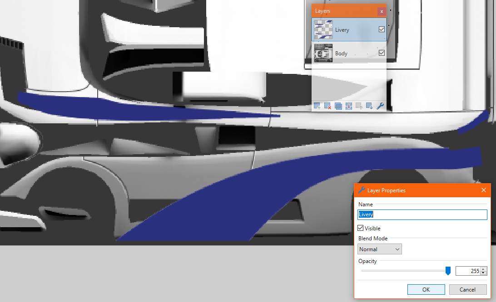
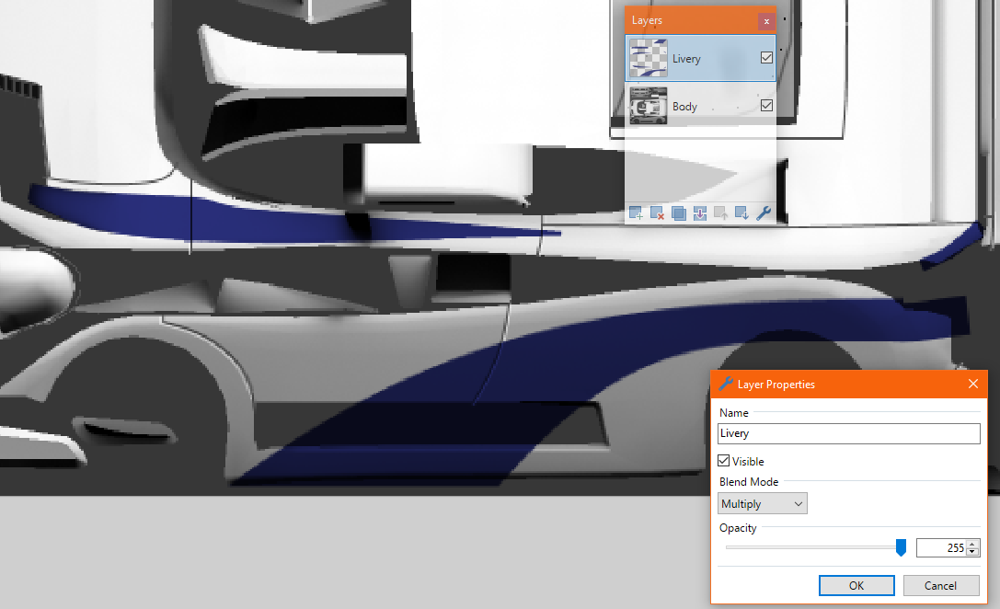

Paint.net is a free program and relatively simple in terms of interface and UI compared to it’s other ‘rivals’, like Gimp or Photoshop, while still featuring many tools and features, like layers and effects. Such effects and adjustments can still be expanded thanks to Paint.net’s community based focus and customizable nature, with the help of plugins, some of which are very useful for modding this game. So overall, thanks to it’s simplicity, it’s recommended for beginners, and thanks to it’s customizability it’s very useful to more advanced modders aswell. Download here
With that out of the way, it should be noted that these tips will be more focused for more novice users, who want to improve their work’s quality and/or create mods in similiar quality to the vanilla assets (or even better).
Layer types
These can be chosen by clicking Wrench icon (a.k.a. Properties) on the Layers window, while having your desired layer selected. Here is list of some of the most useful ones, and explaining why.
Multiply: This, when added to an above layer, takes the colors of the layer below it, and multiplies/mixes them together, making the above layer a sort of mask.
With Normal Blend Mode

With Multiply Blend Mode

This is very useful sort of ‘baking’ liverys onto an Ambient Occlusion baked body texture and if you want to replicate how vanilla game liverys look like (as they were probably made this exact way).\ \ More tips W.I.P.
Shared textures are textures that you can use in your model, without needing them in your mod’s .cpk. Every texture that’s located exactly in the textures folder, is considered a shared texture and can be used by any other mod. This includes the textures of all tiles, dynamics, pickups, wheels, drivers, etc.
The most important textures are the ones the base game cars use for miscellaneous parts, like rubber, glass, carplas2. These are just textures with usually a solid color, but with carefully made .tex files to make them look like their name would suggest. It is recommended to use these in your mod, because most of the time it’s a simple time save, but adds much quality. Here’s most of them:
“carplas2” Perhaps the most commonly used and best looking shared texture, just a simple grey/black plastic texture. Could be used for any simple plastic part and even full bumpers.
“carplas3” A reflective, black plastic texture. Could be used for the trim on the edges of glass for example. (the part connecting the roof and body on the Apachee for example)
“rubber” As the name suggest, a black rubber texture. Mostly used to seperate the car body and the windows.
“glass” Reflective, transparent glass, with a slight bit of a blue tint. Used for car windows. Has a damage map counterpart named “glass2” (use that to UV map your windows to).
“carplast” A light grey, bright version of carplas2. Rarely seen use on cars.
“lighchrm” A quite reflective chrome texture. Mainly used for chrome like surfaces in headlights, though can be used for other smaller parts like exhausts or trim pieces.
“chrome01” The main chrome texture, a slight bit darker and less reflective then lighchrm. This is the intended texture for trim pieces, and other bigger chrome parts. (The Ironhorze’s trim pieces for example)
“chrome02” An alternative to “chrome01”, slightly brighter version.
“colblck”, “colwhite”, “colred” and “colgrey” Non reflective, just solid colors of black, white, red and grey respectively.
Firstly, what are overlay meshes and light flares?
Light overlay meshes are meshes that are hidden by default, and only appear when needed. There are 2 kinds of overlay meshes: Headlights and Brakelights.
Headlight meshes serve as the front and rear lights of the car, and will only appear in dark ambiences. These have to be named headl_*something* in your model to work.
Brakelight meshes act as the rear brakelights for your car, and appear in all ambiences, when you apply the brake on your car. These have to be names brakel_*something* in your model
The easiest way of making these is to simply make a copy of the front and rear lights of your car, but can be expanded further, shown by this example here:
Now light flares (or omni lights) are not meshes, but rather light object that you add to the model, these add a special lens flare glow effect to the headlights and brakelights.
To add them:
In Blender, they are the standard point lamps,
in Zmodeler or 3ds max, they are the omni lights.
Side notes:
Put them slightly in front of the overlay meshes to work properly.
In Blender, if using the Blender .p3d exporter, changing the Color and Energy affects the light in-game.
You can assign a maximum of 4 flares to an overlay mesh.
Not assigning a flare to an overlay mesh by name will add a permanent, always visible flair.
The naming goes as follows:
The Incubator flares’ positions (Highlighted in orange)
Crashday has multiple launch parameters but sadly none were described by the devs. If you find how any of the parameters behave and it is not written here already, let us know!
To launch a game with any of the parameters, right click the game in Steam, select Properties, click “Set Launch Options“. Write any parameters you want, separated with a space.
Here is a list of known parameters:
-windowed (Launches the game in window)
-skiplauncher (Skip the launcher and load the game with the last used settings)
+connect_lobby lobbyid (instantly connect to the lobby with given lobbyid on launch)
+connect (unknown? same as +connect_lobby?)
+password (use this password when joining a lobby)
-watcher
-override_mods
-show_diffuse
-show_shadows (in game will show were textures are applied by the game. Textures will be white)
-show_texture
-show_alpha (instead of the textures will draw it’s alpha channel)
-disable_postfx (disable all screen effects when drawing)
Crashday now supports color LUT’s (Lookup Table) which allow much easier color management for ambience mods. You can think of a LUT as an actual table. Before rendering any frame, the game will get every pixel, take it’s color as a position of the table. Look at our LUT and change the starting pixel to the pixel in the table. Luckily, a lot of modern painting software let’s us work on LUT’s easily.
To get started, download the following neutral color LUT and place it in user/mod_testing/[modname]/content/textures/ambience.
At this point, we should decide which ambience we want to base our mod off of. I’ll choose the Day ambience, meaning I’ll copy the following files from our previously created reference directory content/textures/ambience:
day.tex
day.tga
day_bd.dds
day_bg.tex
day_lut.tex
day_lut.tga
dayh.tex
dayh.tga
and day.amb from content/ambience
If you want to just slightly adjust the feel of the existing ambience, feel free to open the day_lut.tga with your image editor. But if you want to make new and precise look, replace day_lut.tga with the neutral_lut.tga we downloaded, and open it.
What you are looking at now, is our color Lookup Table. As you might notice, the image has a resolution of 16x16x16. Wait what? Yes. This is actually a color cube, where each axis represents a basic color channel (red, green and blue). After that the cube was sliced on the blue axis and the slices were stacked to the right.
As stated before, the game looks at the coordinates of the frame’s pixel and takes the color of the lut at given position. This means, that if you were to make this LUT “negative”, all the 3D rendered objects in the game will appear in negative. Feel free to try it if you’d like!
There are many other things one can do with the LUT, like simulating color blindness (there are mods for that on the Workshop, actually), black and white, sepia effects.
But also we can make really small and nice looking adjustments now. Firstly, we’re going to need to make some reference images. Start the game with mod_testing enabled and making sure to select the Day ambience we are overwriting, take some screenshots that will make good references. Make sure you capture shadows, various greens, industrial tiles, cars, etc. Also make sure you capture them losslessly, using the print-screen button on your keyboard, or otherwise a program that saves them as PNG or BMP will do just fine.
Now import the best reference shots into your picture editing project and create an image of all the useful portions of the reference shots. After doing that, I recommend putting the LUT layer in there in the top-let corner, so we can easily grab it later.
Now we can start adjusting the colors. Using our reference images we’ll be able to tune the colors to get the result we want. Make sure that any color corrections you make are applied to the layer with the LUT!
Please refrain from using tools or plugins that only affect a limited range. This can quickly cause artifacts that will be noticeable in-game. Brightness, Contrast, Hue, Saturation are all great tools. You can also adjust color curves if you wish.
Do NOT use things like blur, glow, sharpen and so forth, as the results of those won’t translate to the game. Remember, we are adjusting colors via a color lookup table. That’s all the game is able to read from the LUT.
When you’re satisfied, go the Canvas Resize the image and Anchor is to the Top-Left. Enter 256 for width and 16 for height. If you put your LUT in the top-left, you’ll end up with only our Color LUT afterwards!
Now save the LUT over the old day_lut.tga and test your ambience in-game! If you still want to make some adjustments, just undo a few steps until you have your reference images back and adjust some more from there.
So you have got your amazing mod or map ready to share with the rest of the world? Nice, you came to the right place.
Publishing to workshop
Mod packing
You only need this step if you are uploading a mod.Head to your user/mod_testing folder and find the mod you want to publish. Now you want to put the contents of that folder into a .zip folder. This step is different depending on what archivator you have, but make sure you are packing into .zip archive. After you have done that make sure that when opening, the only folder there is content. Now we are ready to publish it.
Publishing
Launch Crashday tools from Steam or cdwstool.exe from Crashday/tools folder. After the tools are loaded, click Publish Workshop Item. The new window will appear, where you need to fill the mod or map name, description and picture.
Title: the name of the track that will be showed in Steam Workshop. Please note that only ASCII characters are supported.
Preview: the image of the track or mod as shown in Steam Workshop. Must be JPG or PNG with less than 1MB. Use “Browse…“ to upload the image from your hard drive.
Visibility: sets the visibility of your item on Steam Workshop.
Tags: for tracks, select checkbox “Track” and leave the other checkboxes rest blank. For mods select one or multiple tags, except “Track” describing your mod.
Content: select the .trk map or .cpk package you want to upload. For tracks please note that the name of the file will be displayed as the name of the track in-game as well (e.g. “finals2.trk” will show up as “finals2” in-game)
Description: the text description of the item shown in Steam Workshop.
Item Id: if you are uploading a new track or mod, leave this blank.
If you want to update an existing track or mod, please enter the Id of your previously created Workshop item here. You can obtain the ID from “Your Workshop Items” inside the Mod Uploader tool.
Submit: Click this when you are done. Congrats, your mod should be uploaded!
Modding Crashday is fairly easy in some aspects and incredibly difficult in others. This tutorial hopefully will help you in your journey.
Preparing your workspace
To start modding the game we will need some basic setup steps. Firstly, you should download Crashday Tools from Steam. You can find them after you bought the game in LIBRARY -> TOOLS -> Crashday Redline SDK. This will download CD tools and put them into Crashday/tools/ folder. Launching tools from Steam will launch Crashday’s workshop upload tool.
After we got the tools, it’s a good idea to get reference mod content. If you go into Crashday/data/ you will find .cpk archives with all of Crashday’s data. In here you should unpack needed packages in the same folder, so you will get a content folder. To check what packages you want to unpack, visit Content Packages.
Understanding Crashday loading
Firstly to understand how we want to build our mod we will need to take a look at the process of mod loading. In general, it looks like this:\ At first stage the game takes all the .cpk files from Crashday/data/ and unpacks them into some imaginary folder (Just like we did). If any of the original files are edited or corrupted at this point, the game will crash on us.\ After that, the game starts to unpack mods from workshop in to the same imaginary folder, in order from top to bottom of our launcher list, overwriting original files if necessary. This way mods can add their own files to the game system, as well as overwrite original ones.
If user has enabled mod development mode in the launcher, our test mods will also be loaded after that. These can be placed as .cpk archives in Crashday/user/ folder, or as uniquely named folders in Crashday/user/mod_testing/
Creating your first mod
Now as we got the basics out of the way, lets create a simple test mod. If we take a look at the content folder of our unpacked packages, we can see a dbs folder containing game.dbs file. This file has all the different common parameters the game uses. Lets try and edit it!
Now head to user/mod_testing/ and create a folder named my_awesome_mod. As you remember, now contents of this folder will be dropped into our imaginary CD folder and after that the game will load. This means if we want to change the game.dbs file of the game, we need to replace the original on game load. If the original file lies in imaginary_folder/content/dbs/game.dbs we need to put ours in my_awesome_mod/content/dbs/game.dbs, so it overwrites the original. So enter our folder and create content folder, in which we need our dbs folder. As we want to edit .dbs file, we can just copy the original from our unpacked reference and copy it into our mod folder. Now we can edit it. Most of Crashday files, as well as .dbs can be opened with a text editor. For more info about every type file visit File Types. After opening it you will see a list of all Crashday’s parameters.
Let’s change Physics.Gravity 9.806650 to Physics.Gravity 3.1415 and save the edited file.
Now launch Crashday, select MODS and enable mode development mode.
If you encounter any bug while testing your mod, or the game takes to long to load, try the Disable workshop mods option. It will not load any workshop mods, but will still load testing mods.
Now we are ready to play and test the mod! If you did everything correctly, after launching any mode you should have much lower gravity. Congratulations, your first mod is ready!
All CD:RE files and mods are stored inside .cpk files. These files are just .zip archives and contain all of the game’s content. If you go to the ...\Crashday\data folder you will find all of the game’s .cpk content packages. Please note that you are not allowed to edit default game files and the game will crash if you try to edit them. For editing content you need to create a custom mod.
For easier distribution CD’s content is divided into several packages, each containing some type of files.
data000.cpk - Common files
data001.cpk - Music
data002.cpk - Ambience related files
data003.cpk - Car related files
data004.cpk - Vegetation related files
data005.cpk - Dynamics related files
data006.cpk - Tile related files
data007_.cpk - Translation files ( depends on which language is selected in steam)
a - English
b - German
c - Italian
d - Russian
e - Hungarian
f - Turkish
g - Portuguese
If you are planning to mod the game, you would generally unpack all useful packages in the same folder(you probably do not need the Music one). This would give you all of Crashday’s unpacked content which can be edited(but not loaded) and used as reference.
While making mods for Crashday you may encounter a lot of different crashes and bugs. Problem is, the error messages were meant for developers so they don’t usually give enough info about how you would fix the given bug. But usually it is possible to pinpoint the problematic file and fix the error. For this purpose here is the list of well-known errors and their possible causes.
If you found any error which is not on that list, please report it to the modding channel in Crashday Discord.
Assertion failed
Generally these errors appear when the game got a value it did not expect to. If the game expects a mass as integer on line 3 in some file but finds a great meme this error will appear. Even then, we still can differ between different assertion fails.
Wrongly specified amount of tuning items at the top.
Line 3 should be empty.
size<BM_BYTESPERBLOCK
Exact message:
1 2 3 4
Assertion failed! size<BM_BYTESPERBLOCK
(file ..\code\game\propcore\tools\memblock.cpp, line 52)
Problematic file: unknown
Possible causes:
This error appears when the game tries to load a file bigger than it can handle. Usually none of the text files should exceed this limit so the most possible reason is too big .p3d file.
If it’s a .p3d model chances are you have to many polygons. Reduce to 58k.
wheelwidth > 0
Exact message:
1 2 3 4
Assertion failed! wheelwidth > 0
(file ..\code\game\carspecial\skidmark.cpp, line 39)
Problematic file: .p3d model of the wheel
Possible causes:
No “main” mesh found in the model.
mass > 0
Exact message:
1 2 3 4
Assertion failed! mass > 0
(file ..\code\game\dynobj\dynobj.cpp, line 529)
Problematic file: unknown
Possible causes:
Faulty mesh?
Some dynamic or a car has a zero mass.
you’re assuming errors make sense
that’s a rookie mistake
@Mica
Others
invalid NumPlate-value
Exact message:
1 2 3 4 5 6
The car file contains an invalid NumPlate-value! Possible is 'wide', 'narrow' or 'us' file = filename
(this message was produced in: ..\code\game\carobj\carspecs.cpp, line 274)
Problematic file: carinfo.cca. In the error message file = parameter should show what car caused the crash.
Possible causes:
You defined a non existent license plate e.g. narow (one r is missing).
The engine expected another value at this line position. This probably means you missed some value, added one extra. Possibly incorrect number of damage textures is present.
Expected physics section but found
Exact message:
1 2 3 4
Expected physics section but found file = *filename* (this message was produced in: ..\code\game\carobj\carspecs.cpp, line 390)
Problematic file: carinfo.cca. In the error message file = parameter should show what car caused the crash.
Possible causes:
Number of gear rations is not equal to the amount of gears actually present in the config file (should be number of gears + 1 for rear).
The engine expected another value at this line position. This probably means you missed some value, added one extra.
Unsupported type for shop article!
Exact message:
1 2 3 4 5
Unsupported type for shop article!
TempName = *partname* (this message was produced in: ..\code\game\user\shop.cpp, line 645)
Problematic file: shop.lst.
Possible causes:
Part group specified incorrectly. Check .cdo file definition for possible variants.
The engine expected another value at this line position. This probably means you missed some value or added one extra.
Error: texture couldn’t be found!
Exact message:
1 2 3 4
Error: texture could't be found! textureFile = *texturePath* (this message was produced in: ..\code\game\propcore\texture\cbm.cpp, line 352)
Problematic file: missing texture, carinfo.cca.
Possible causes:
The game looks for the texture which is actually missing. Possibly wrong path or name is used somewhere.
One mesh is listed twice in carinfo.cca mesh list.
Could not allocate Index Slot!
Exact message:
1 2 3
Could not allocate Index Slot! (this message was produced in: file..\code\game\propcore\object\batch.cpp, line 208)
Problematic file: .cat
Possible causes:
You forgot a tile name or did not specify the position with auto positioning turned off. Visit file definitions for .cat files for reference.
Crashday has a lot of different files used for different things. Generally there are two types: text and binary ones. Binary files can only be edited using special programs, plugins or the game itself. Text files can be opened with any text editor.
All the text files are based on the same format:
Every line is important. The game will look for a certain variable on a certain line position, so don’t add any additional lines etc.
After every line you can add a comment using # symbol. Everything after it on the same line will be ignored by the game.
CD uses a dot to represent decimal numbers e.g. 1.23
Colors are represented as RGB, channels are separated with a space e.g. 255 255 255 is white color.
Text based files
.amb Ambience definition
path: content/ambience/
Ambience files are used by the game to change weather. In general it is a way to change how light, reflections and sounds work in the level. Here is a cleaned up version of CD’s day.amb
PropsFX-Ambience-File # defines a start of an .amb file - # name of ambience (overwritten by localized data for default ambiences) ambience/day # texture set for the ambience (lut, background, skybox, sun). First part is the folder name inside textures folder, second is the start of the file name the game will look for(day_bg, day_lut etc.) 219 186 149 # sun color 1 # maximum sunlight strength 2 # power exponent of sun light 97 111 131 # ambience sky color 45 49 54 # ambience ground color 0 0 0 # absolute ambience minimum 255 217 175 # specular reflection color 170 170 170 # darker dense vegetation render color (e.g. treetops) 190 190 190 # brighter vegetation render color (e.g. grass) 0 -0.6 -0.8 # sun light vector 90 # additional rotation of sun vector 1.0 1.0 1.0 1.0 # screen gamma 1 # apply gamma to sky? 55 55 55 # texture color filter 0.0 # strength of color filter 0.1 # strength of color filter on car (defines how much the car's color is "greyed out", to not oversaturate) use_colormap 3 # number of ramp points 0->0 127->128 255->255 # ramp point 1 0->0 127->128 255->255 0->0 127->128 255->255 69 78 91 # fog color for looking into normal scenery 0 0.5 # fog amount (min,max) looking into normal scenery 93 103 115 # fog color for looking into sun haze 0 0.5 # fog amount (min,max) looking into sun haze ambience/day.wav # environment sound in sounds folder 0 0.2 0.8 # sunflare vector 255 228 173 # sunflare color 300 300 # sun corona width/height 5 5 5 # object shadow color 0.4 # max shadow alpha density 1.0 1.0 1.0 # reflections: min/max/fresnel scaling coefficients 0 # turn on headlights for cars 255 255 255 # color tint for the lensflares/coronas in this ambience. 255,255,255 means no tint. 0,0,0 makes flares invisible 70 78 78 # the color for the bottom of the scene background 0 # rotational angle to correct the envmapping directions 0 # [optional] force music off (useful when hacking envsound with a soundtrack)
ladder.lst Career opponent list
path: content/career/ladder.lst
Ladder list defines the names of opponents in career mode. Opponent names in quickplay can be found in translations files.
Crashday-CareerLadder # defines a start of ladder.lst 21 # number of opponents 1 # Randomize opponent names? James|Hamilton amateurs # Name|Surname league George|Rush amateurs Emmett|Brown amateurs Kevin|Hale amateurs Donald|Spikes amateurs Mia|Tsukamoto amateurs Steve|Jarvik amateurs Percy|Kay amateurs Waldo|Silver professionals Isaac|N. professionals John|Williams professionals Jules|Ash professionals Robert|Patch professionals Joe|Eastman professionals Kanzan|Tsukamoto professionals Vincent|Dust final Maurice|Kane final Lance|Cartwright final Ryan|Whitney final Tyreece|Moore final \1THE|INCUBATOR lastmission
.lst Shop list
Shop lists are used to display what can be bought in the shop. There are three main lists:
content/shop/cars/carname/ items will show up for the given car. In these files you want to specify vinyls, car perf upgrades etc.
content/shop/cars/weapons.lstis a list of available weapons in game and will show up for every car under weapons category. Usually you don’t need to edit this, unless you want to change some weapon’s shop stat.
content/shop/ items will show up for all cars. Generally the only thing you want there are wheels
Every .lst files consists of a first line and then any amount of entry blocks separated by an empty line.
1
Crashday-ShopDataList # defines a start of a .lst file
an example of an entry block:
1 2 3 4 5 6 7 8 9 10 11 12 13
Next: #--------------------------------------------- crsh1 # identifier name crashpower # group (car, fbumper, rbumper, sidekit, hood, rwing, wheels, performance, weapon, skin, cassis, armour, crashpower) NONE # parent object (e.g. car folder) or NONE $ID trkdata/cars/apachee/shop.lst crsh1.Name # Article name (English) DEPRECATED # UNUSED article description (English) aftercarbought # availability condition 0 # UNUSED show media _before_ available NONE # UNUSED media showed when available (can be NONE) 8000 # cost to buy in shop NONE # UNUSED shop picture 0 # is this a stock car part? 0 # !IMPORTANT! - Is mod content? This must be set to 1 if you are creating additional items for the shop. Used to properly save kits - Outblast.
If you want to add any part to the car, not only you have to have it in the model and listed in carinfo.cca, you will also need to create an .lst entry for that part. For every new car you also have to create a car entry, usually looking like this:
1 2 3 4 5 6 7 8 9 10 11 12 13
Next: #--------------------------------------------- *currentcar* # identifier name car # group (car, fbumper, rbumper, sidekit, hood, rwing, wheels, performance, weapon, skin, cassis, armour, crashpower) NONE # parent object (e.g. car folder) or NONE $ID trkdata/cars/apachee/shop.lst apachee.Name # Article name (English) DEPRECATED # UNUSED article description (English) withrespect 1370 # availability condition 0 # UNUSED show media _before_ available NONE # UNUSED media showed when available (can be NONE) 152000 # cost to buy in shop NONE # UNUSED shop picture 0 # is this a stock car part? 0 # !IMPORTANT! - Is mod content? This must be set to 1 if you are creating additional items for the shop. Used to properly save kits - Outblast.
In every block, if the .lst file was loaded in the car folder you can use *currentcar* text. When the game process the file it will automatically replace it with the cars identifier.
There are three possible availability conditions
withrespect [number] This item will unlock after number amount of respect is gained.
aftercarbought This item will be unlocked when you buy a car. Can only be used for items with specified parent object.
always This item will by always unlocked.
nowhere it is specified what car is used, so i guess the parent object is used for aftercarbought condition. But seeing how its named parent object originally and not car parent, makes me think we could define another item or something else as parent? Stackable objects or smth?
.tex Texture shader
path: found in the same folder as any texture you use. Has the same name as the given texture, but the .tex format.
These files define how textures are rendered in game.
1 2 3 4 5 6 7
has_alpha # defines if the texture has opaque places. If it does not, comment out that line or leave it blank. !The line still should be there! # disable_mipmapping # enable or disable mipmaps? default # ingame material type. Options: default, grass, tree, standard or STANDARD. If you choose standard, the file ends here. diffuseenvmap # shader type 0.3 # minimum reflection 0.7 # maximum reflection 3 # fresnel exponent
There are multiple possible shader types. Each of them defines how the following lines are read. Next up you will see a list of shader types followed by their used variables.
specularvertex # diffuse lighting with specular reflection map ultra # minimum graphics quality to activate shader(if user has lower setting, diffuse will be used) Possible options: "ultra", "high", "medium" or "low" _self_ # specular map file. _self_ to use alpha channel of the texture, or name of another texture. e.g. colwhite.tga 0.7 # specular overall strength 2 # specular power exponent 0.9 # diffuse sun light strength
chrome # chrome shader(great job explaining what it actually is) 1 # amount of chrome blended against diffuse
1 2
use_shaderparams_from # reference to other .tex file to pick shader specified there [filename].tex # tex file we copy the shader settings from
These were taken from the old sdk, but looking at the reversed Crashday source code, these were also found: diffuse(possibly one parameter, should be the same as default), specularmapping(first variable is graphics setting, then something else?), alphatest, alphatestdoubleside, alphadoubleside
.cdo Dynamic object definition
path: content/dynamics/
These files define dynamic objects that can be placed on the map. To add an object to the editor, you will also need to add a .cat file
1 2 3 4 5 6 7
Crashday-DynamicObject-File # defines a start of a .cdo file arrowright.p3d # UNUSED? should be the same as the next line arrowright.p3d # model used by the object METAL # material (Options: CARMETAL, METAL, STONE, WOOD, PLASTIC, RUBBER, EXPLOSIVE) 180 # mass in kg(-1 makes object immovable) 0 # UNUSED? amount of force needed to rip the object from the ground 0 -0.2 0 # center of gravity
.tun Tuning definition
path: cars/*carname*/ .tun
These files has a list of all possible tuning parts which the cars could. If you want a part to be purchasable, you also need to define a .lst file for said item.
Generally a .tun files starts like this:
1 2 3
# Crashday Car Tuning definition file 11 # Num tuning items in the file # Empty line
Don’t forget to adjust the amount of items line if you add or remove anything.
after the first block on every line you will have a separate tuning item. Every one of those should start with a unique identifier, which will be used in the shop lists and carinfo.cca to define bot setups.
1
name=meme1 *tuning item*
Every tuning item can have multiple parameters, separated with a space. For parameters starting with add, you can use negative values to remove some amount from that parameter. But be sure that total value would not go beyond possible limits e.g. a part that makes a car negative mass. If the parameter starts without add, it’s value will be multiplied with current value.
Here is a list of possible parameters:
Physical tuning
add_massadd= Amount of mass to add to the car.
add_horsepower= Amount of horsepower to add. This is a cosmetic value showed in garage.
add_topspeed= Amount to rise the top speed by.
add_torquenm= Amount of acceleration torque in Nm.
add_antirollheight= Amount of anti-roll in meters
add_trackfront= Length of the front wheel track. Positive values move the wheels away from center.
add_trackrear= Same as add_trackrear but for rear wheels.
add_wheelposyfront= Vertical position of the front wheels with fully compressed springs.
add_wheelposyrear= Same as add_wheelposyfront but for rear wheels.
brake= Brake strength.
diffratio= Differential value.
energyloss= Amount of energy lost when the car gets hit.
crashpower= Amount of energy car gives to other cars on hit.
deform= Car’s deformation strength.
springstiffness= Suspension spring stiffness.
springrange= Suspension spring length.
springdamping= Suspension spring damping.
DECALS/VINYLS & EFFECT PAINT
decaltype=decal Defines a decal. Has to be present.
decal1= Texture name for the first decal e.g. decal2a.tga. It is possible to add three more decals, just change the number (decal3=meme.tga)
decalcolor= RGB hex color value (without ‘#’ or ‘0x’) to be multiplied with the decal textures.
tex1toapplydecal1= Name of the texture (body2.tga to apply decal1 to. Change the last number to change the decal number applied. Change the first number if you want to apply to multiple textures (text2toapplydecal1=body2.tga should work)
OTHER
add_carclass= Upgrade the car’s class. This can “0.5”, “1”, “1.5”, “2”. An upgrade of “1” is equal to increase the classification by one classification letter, like from a “B” to an “A” car.
engsound= Change the engine sound set.
ignitionsound= Change the ignition sound set.
turbonoise= Change the volume of turbo blow off from 0 to 1.
gearboxnoise= Change the volume of gear box noise from 0 to 1.
backfires= Change the intensity of backfires from 0 to 1.
add_missilecapacity= Amount of starting missles of the car.
shift_exhaust1x= Move the first exhaust on the X coordinate by this value. Change the last letter to y or z to move in other coordinates.
shift_exhaust2x= Same as previous but for the second exhaust.
p3dmesh1= Add a mesh to the car. Parameter can end from 1 to 16.
removemesh1= Remove a mesh from the car. Also ends from 1 to 16. Note that this should be used only to remove non tuning meshes, the ones specified in mesh list in carinfo.cca.
.cfl Field object definition
path: /tiles/
These files are used to add tiles to the game.
1 2 3 4 5 6 7 8 9 10 11 12 13 14 15 16 17 18
Crashday-FieldObject-File - # tile name (in editor, only used for custom tiles, which don't have a category specified) field.p3d # model used by the tile 1 1 # tile size (x y). Each can be 1 or 2 only (10 or 20 meters) GROUND_FLAT # UNUSED? can be GROUND_FLAT GROUND_EDGE or GROUND_SIDE 0 # list the track piece in the editor? If 0 a .cat file will be needed to show the tile in editor NONE # UNKNOWN. NONE or cfl to replace the original when the tile is on slope. Only for 1x1 size tiles 2.0 # maximum random ground shift 1 # after recover, can the player spawn on the tile? 0 # is tile a checkpoint? -8.5 10 8.5 16 # REMOVE THIS LINE IF THE PREVIOUS LINE IS 0. top-left and bottom-right coordinates of the checkpoint plane 1 # is it possible to freely roam across all tile without hitting anything? If 0 requires a .cai AI file. default # dynamic object dropping height. default = +100 meters. Use negative numbers if you want to put objects into tunnels STOP # bend restriction axes separated with a space in any order. Possible values: V1, V2, H1, H2, STOP at the end to indicate the end.
Crashday allows tiles to be bent using heightmaps in editor. Usually for that, tile models are pre-cut every meter. But sometimes you don’t want that, to avoid strange results e.g. misshaped houses on a slope. For that we can use the last parameter in .cfl, to restrain bending on certain axes. Here is an image to explain possible choices.